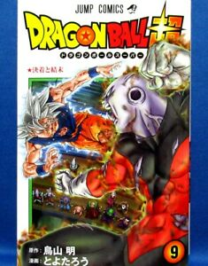
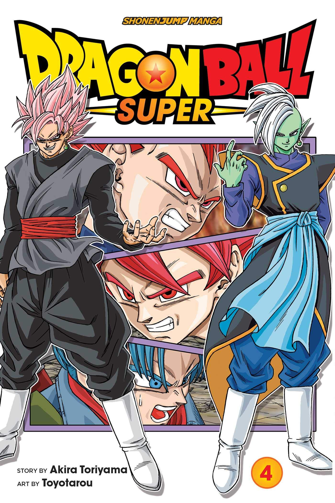

Dragon Ball Super (Japanese: ドラゴンボール超スーパー, Hepburn: Doragon Bōru Sūpā) is a Japanese manga series and anime television series. Its common plot define is written by Dragon Ball franchise author Akira Toriyama, and is a sequel to his unique Dragon Ball manga and the Dragon Ball Z television collection. The manga is illustrated by using Toyotarou with tale and editing by Toriyama and commenced serialization in Shueisha's shōnen manga magazine V Jump in June 2015. The anime version produced by using Toei Animation aired on Fuji TV from July 5, 2015 to March 25, 2018. It follows the overall plot define written by way of Toriyama, with the person episodes written via distinctive screenwriters.